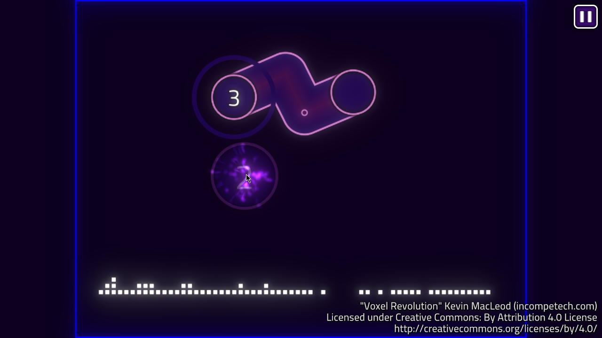
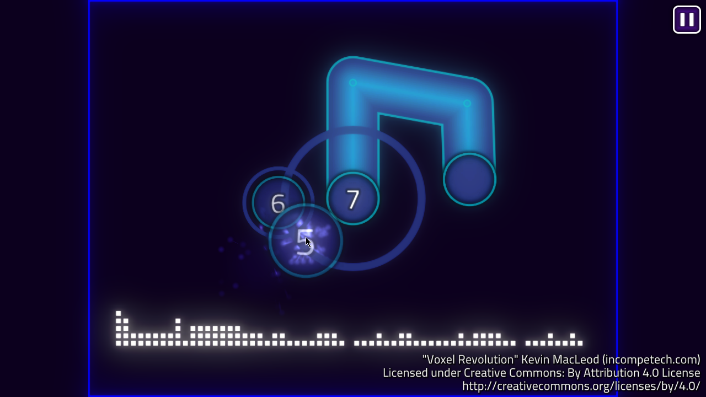
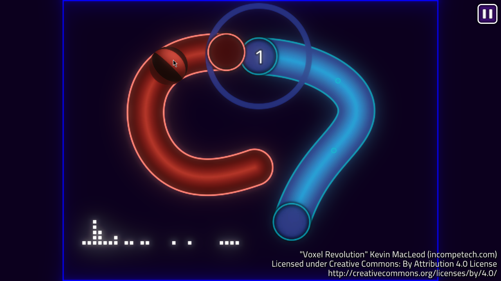
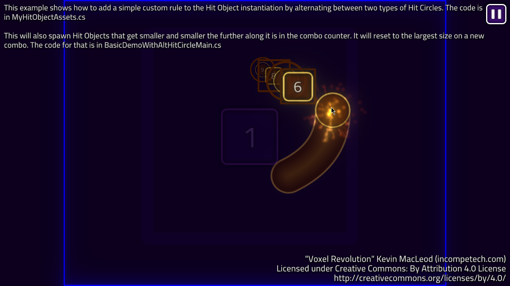
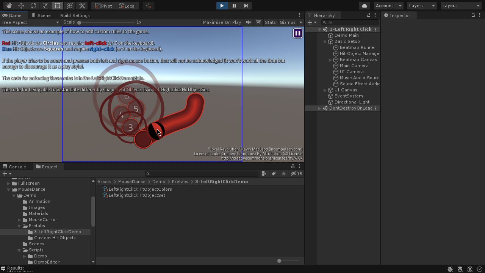

MouseDance User Documentation
MouseDance is a Unity plugin that loads .osu files and allows you to play Osu! style rhythm games inside Unity. This allows you to use the Osu! Beatmap Editor to create and playtest your own .osu files, then import them into Unity to be used in your actual game.





Features:
- Allows you to leverage the tried and tested Osu! Beatmap Editor to create and playtest your own .osu files before importing them into Unity. Use community-made tools such as Mapping Tools to tweak your .osu files.
- Hit Objects are pooled and re-used, minimizing garbage allocation while playing.
- Uses SDF technique for rendering curves, allowing smooth thick curves.
- Customize gameplay rules. MouseDance API allows you to hook your own code into the game to change how it plays in many ways. The demo scenes include different examples.
- Works on desktop, mobile, and WebGL.